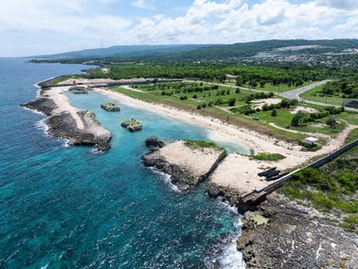
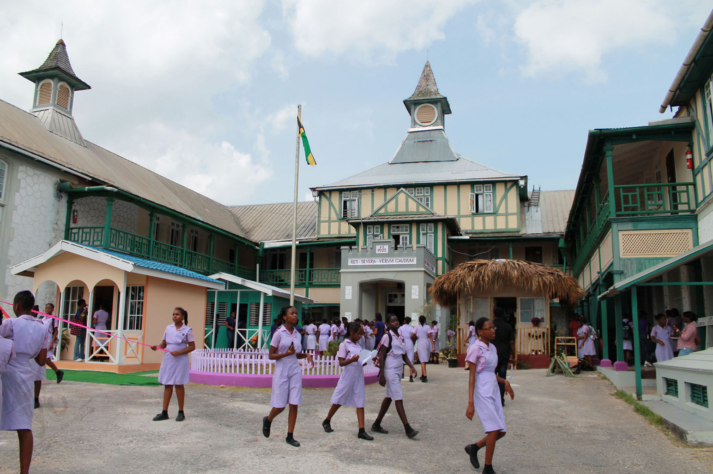
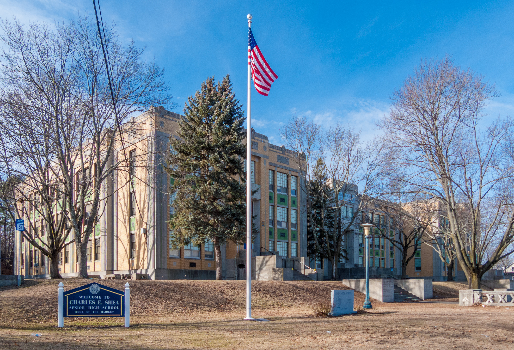
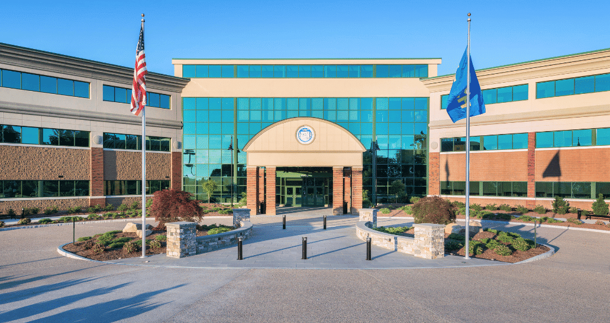
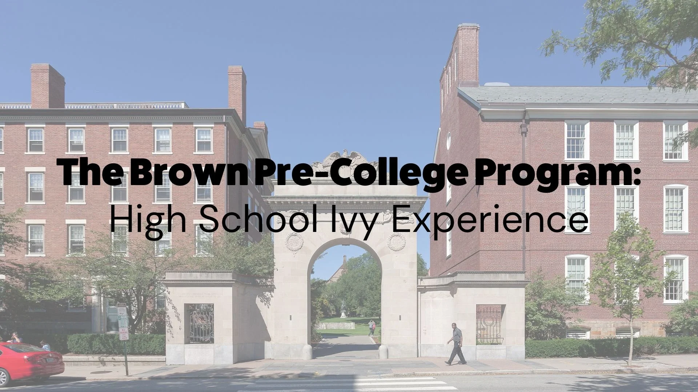
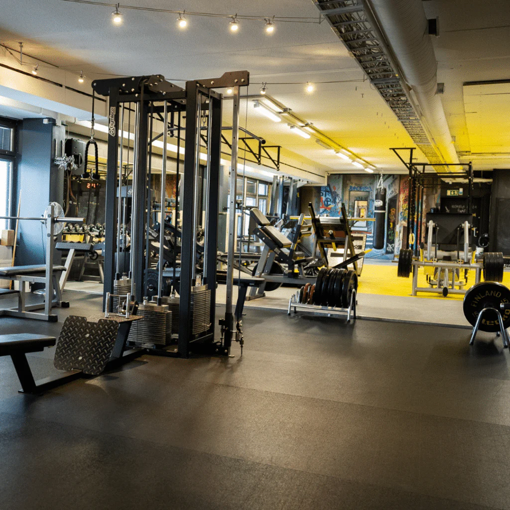
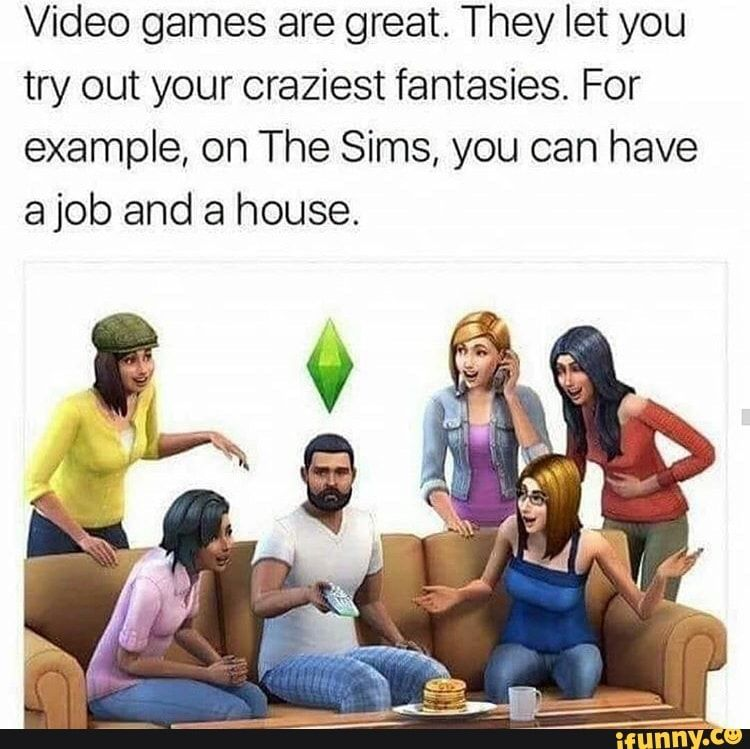
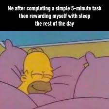

Biography
Hello, My name is Mikha'la Campbell . I was born on January 23, 2008, and I am currently 18 years old.
I was born and raised in the beautiful island of Jamaica, in the parish of St. Ann.
I moved to the United States when I was 14 years old, the very beginning of my high school career.
Strangely enough, adjusting was not a challenge, all credit due to my exposure to American media.
I am currently a high school senior participating as an Early College Student at New England Institute of Technology.
Go Tigers!

A drone video of my hometown: Discovery Bay, St. Ann, Jamaica
Schooling
-
Kingergarten & Primary: I attended The Glen Preparatory School for k1-k3 and from 1st to 6th grade. After which I graduated to attend high school.
(Things are done slightly different in Jamaica)
-
High School Part 1: After prep school, I took the national testing PEP and I was placed at the St. Hilda's Dioceasan High School for Girls at the height of Covid.
This was one of the top schools in Jamaica at the time, therefore it was a great accomplishment.

-
High School Part 2: When I moved to the US in 2022, I began high school at Charles E. Shea High School in "The Bucket", formally known as Pawtucket, Rhode Island.

-
Early College: My senior year of high school, I made the decision to start college early at NEIT to see if my major was right for me.

More Info about Early College at NEIT here.
-
Summer Programs: I am apart of the TRIO Upward Bound Program which gives students the opportunity to live at RIC for 6 weeks during the summer
to take classes to prepare us for the incoming school year.
Also, I participated in Brown Pre-College I got my first introduction to Computer Science and I was given the opportunity to also live on the campus.

Hobbies
-
My most favorite thing to do is play tennis. I started playing around 4 years ago for
my high school team and I have loved it ever since. Unfortunately, I don't get
to play as much as I would like because of the weather (hace muy frio), however when I do I give it my all.
-
I enjoy going to the gym. Similarly to tennis, I find it to be one of the most relaxing and regulating activity I do,
as it allows me to refocus any energy I have into what I'm doing instead of staying in my thoughts. This, I can do all year round,
and the results are a plus.

-
My favorite time-waster hobby that does not involve physical activity is playing the Sims. At the
moment I play The Sims 4, but I would say my all time favorite is the Sims 2 because of the attention
to detail. However, overtime it gets extremely buggy and crashes as it is an older game. This caused me to switch to the Sims 4.
And for the Sims 4? All I have to say is thank God for modders because I'm not sure I would survive the game without them.

-
Honorable Mention: Sleeping. God's greatest gift to us all. The ability to close your eyes,
silence your mind, and rejuviate your body for whatever comes next. I love sleeping, I could not imagine a life
without sleep. I'm sure many share similar feelings about this topic.
